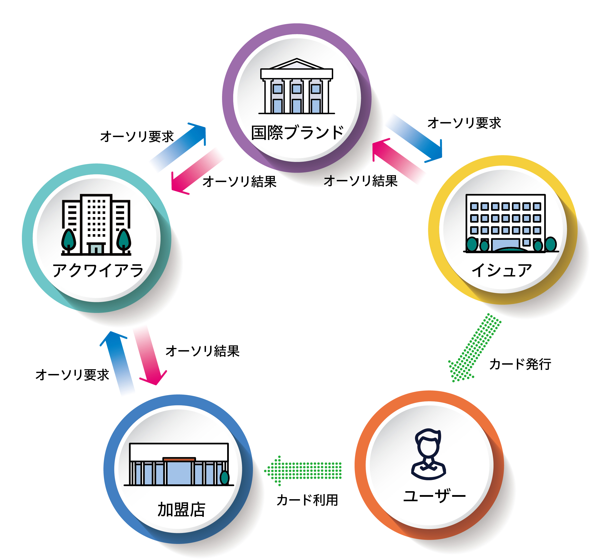

「キャッシュレス」という言葉がすっかり浸透しつつある昨今、店頭での支払いの際にカードやスマートフォンを提示する姿はすっかり日常風景になりました。ここ数年、「〇〇Pay」を称するコード決済サービスが次々と登場し、ポイント還元の大盤振る舞いもあって「キャッシュレス＝コード決済」というイメージを持つ人も増えています。しかし、日本の決済市場において大きな存在感があるのはやはりクレジットカードです。事実、クレジットカードの取扱高はキャッシュレス全体の8割を超えるなど、圧倒的なシェアを誇っています。
クレジットカード決済の仕組みについて語る時、よく聞かれるのが「『 決済センター 』って何をしているところなのですか？」という疑問です。クレジットカード会社の役割は分かるけれど、「 決済センター 」がどのような機能を果たしているのか、よく知っているという人はあまり多くないでしょう。ここでは3回にわたり、クレジットカード決済の仕組みと「 決済センター 」の役割について、できるだけ分かりやすく解説していきたいと思います。
第2回は、クレジットカードの取引フローについて解説します。
カードの信用照会「オーソリ」
クレジットカードの「クレジット」とは日本語で「信用」を意味します。つまり、クレジットカード決済とは「信用取引」なのです。この信用のベースになっているのは、カード申込時に申告する本人の属性や年収などの情報と、カード会社の垣根を超えて共有されるクレジットヒストリー（過去のカード利用履歴）です。イシュアはそれらの情報を元にカードの与信枠（利用上限金額）などを設定し、会員にカードを発行しています。
皆さんが店頭でクレジットカードを使う際は、端末にカードを差し込んで暗証番号を入力し、しばらくすると用紙が何枚か排出され、そのうちの1枚である「クレジット（カード）売上票」をレシートと一緒に受け取ります。その後、カード会社から利用金額の請求が来て、銀行口座から引き落とされる、というのが一般的な流れです。
その背後では、大きく分けて3つのプロセスが進行しています。1つ目は「オーソリゼーション（オーソリ）」と呼ばれる処理で、日本語にすると「信用照会」となります。クレジットカード決済を行う際、本当にそのカードが使えるのかどうかを加盟店からカード会社側にリアルタイムで確認するものです。一般的には決済端末から店舗情報や金額情報がオーソリ電文としてイシュアに送られ、すぐに承認の可否情報が戻されます。照会の内容は、使われようとしているカードが有効期限切れだったり、紛失・盗難にあったカードだったりしないかどうか、また与信枠をオーバーしていないかといった点です。店頭の端末にカードを差し込んで暗証番号を入力した後に待たされる数秒間は、このオーソリを行っている時間なのです。

▲クレジットカード取引におけるカードの信用照会「オーソリ」の流れ
売上金額を報告する「クリアリング」
カード決済における2つ目のプロセスが「クリアリング（売上処理）」です。前述のオーソリはあくまでもカード利用についての承認を得るだけなので、そこから売上金額を確定させ、加盟店と契約しているアクワイアラ経由でカード発行会社であるイシュアに売上請求を行う処理がクリアリングとなります。ここまで来て初めて、クレジットカードでの決済が実行されたことになるのです。
オーソリが基本的にリアルタイムで処理されるのに対し、クリアリングは1日分のデータを端末内に貯めておき、営業終了後などに集計して送信するバッチ処理がよく使われます。
カード会社間の資金清算「セトルメント」
オーソリとクリアリングを経てクレジットカードの決済が成立すると、今度はイシュアとアクワイアラの間で資金清算が行われます。これを「セトルメント」と呼びます。セトルメントは基本的に、国際ブランドが間に入って各イシュア・アクワイアラ間の決済金額を相殺する形がとられます。資金の流れとしては、イシュアがカード決済の利用金額をアクワイアラに支払い、アクワイアラからはイシュアの取り分である手数料（IRF）が支払われます。また、国際ブランドが受け取る手数料（ブランドフィー）もここで徴収されます。
多くのクレジットカード会社はイシュア・アクワイアラの両方を兼ねているので、クレジットカード会社間で、アクワイアラとしてイシュアに支払う金額と、イシュアとしてアクワイアラから受取る金額を相殺して清算します。クレジットカード会社の清算額は、アクワイアラとしての金額＞イシュアとしての金額、となった場合はプラス（入金）となりますが、イシュアとしての金額＞アクワイアラとしての金額、となった場合はマイナス（出金）となります。
なお、セトルメント外の精算業務としては、加盟店精算と会員請求が行われます。加盟店精算はアクワイアラから加盟店に対し、事前に取り決めた比率の手数料を差し引いた利用金額を支払うものです。この手数料には、IRFやブランドフィーも含まれています。
会員請求はイシュアからカード会員に対して、利用金額の請求・引き落としを行うものです。これが完了すると、一連のクレジットカード取引がすべて終了となります。
今回は、クレジットカード決済の裏側で行われている取引フローについて解説しました。次回、第3回はいよいよ決済センターの役割について説明していきたいと思います。